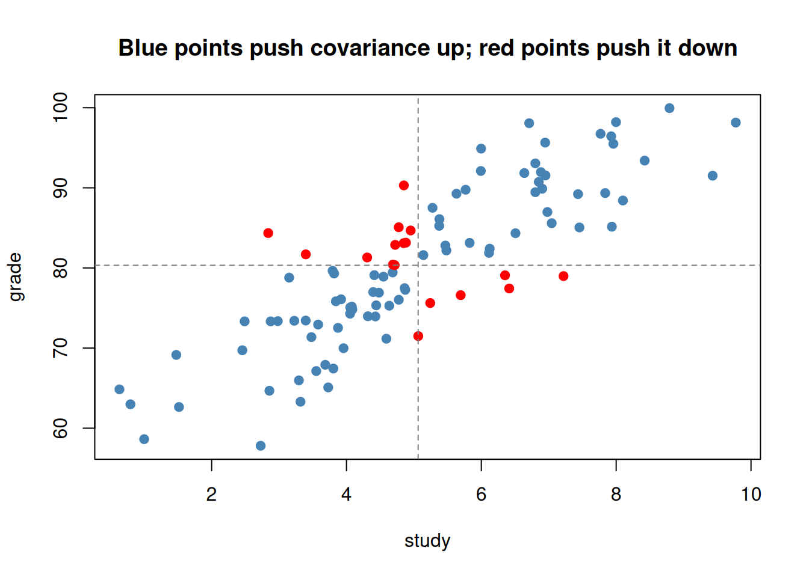
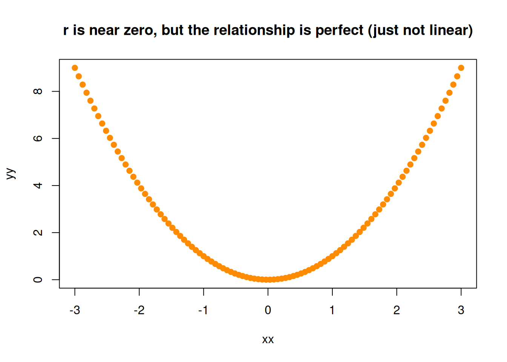

We want to emphasize that most of our work relies heavily on covariance structures. Everything from correlation to regression to ANOVA to structural equation models is, at bottom, an argument about how variables vary together. So before we build models, we need to understand the raw material they are built from. Variance measured how a single variable spreads around its own mean; covariance measures how two variables spread around their means at the same time.
6.1 Learning Objectives
See covariance as the natural two-variable extension of variance.
Compute and interpret a covariance, and understand its units problem.
Standardize covariance into correlation, and know what correlation can and cannot tell you.
Recognize covariance as the engine beneath the General Linear Model.
6.2 Why Start With Causes?
Science usually begins with a hunch about a cause: sleep affects mood, study time affects grades, a drug affects recovery. We cannot see causes directly; we can only watch variables move. If X truly drives Y, then when X is high we expect Y to be high (or low) systematically - the two should co-vary. Covariance is our first, humblest measurement of that co-movement. It cannot prove the cause (that famous warning is coming), but a cause that leaves no covariance behind is a cause with no evidence.
6.3 From Variance to Covariance
Recall variance: the average product of a deviation with itself, \(\frac{\sum(x-\bar x)(x-\bar x)}{n-1}\). Covariance makes one small change - it multiplies each variable’s deviation by the other’s:
Think about the sign of that product. When a point is above the mean on both variables (or below on both), the two deviations share a sign and their product is positive. When it is high on one and low on the other, the product is negative. Sum them up: mostly-positive products mean the variables rise together; mostly-negative means one rises as the other falls.
set.seed(5)study <-rnorm(100, 5, 2)grade <-60+4* study +rnorm(100, 0, 5) # grade rises with study# by hand:cov_hand <-sum((study -mean(study)) * (grade -mean(grade))) / (length(study) -1)c(by_hand = cov_hand, r_cov =cov(study, grade)) # match
by_hand r_cov
15.48643 15.48643
Positive, as expected: more study, more grade. Let’s see it, colouring each point by the sign of its deviation product:
sign_prod <- (study -mean(study)) * (grade -mean(grade))plot(study, grade, pch =19, col =ifelse(sign_prod >0, "steelblue", "red"),main ="Blue points push covariance up; red points push it down")abline(v =mean(study), h =mean(grade), lty =2, col ="grey50")

The blue points (agreeing deviations) dominate, so covariance is positive. That picture is covariance.
6.4 The Units Problem, and the Fix: Correlation
Covariance has a fatal flaw for interpretation: its size depends on the units. Measure grade in points vs. proportions and the covariance changes wildly, even though the relationship is identical. Sound familiar? It is the same units problem the standard deviation had - and we fix it the same way, by standardizing. Divide covariance by both standard deviations and you get the correlation coefficient, \(r\):
Correlation is covariance stripped of its units, squeezed onto a fixed scale from \(-1\) (perfect negative) through \(0\) (no linear relationship) to \(+1\) (perfect positive). Now the number means the same thing whatever the variables - which is why \(r\), not raw covariance, is what we report.
6.5 What Correlation Will Not Tell You
Two eternal warnings. First, the one on every coffee mug: correlation is not causation. Ice-cream sales and drownings correlate (both driven by summer heat), but sundaes do not drown people. Second, and less appreciated: \(r\) measures only the linear part of a relationship. A strong curved relationship can produce \(r \approx 0\). This is why we told you to always plot your data - the single number can hide the whole story:
# a perfect U-shape: strong relationship, ~zero correlationxx <-seq(-3, 3, length.out =100)yy <- xx^2c(correlation =round(cor(xx, yy), 3)) # ~0, yet Y is completely determined by X!
correlation
0
plot(xx, yy, pch =19, col ="darkorange",main ="r is near zero, but the relationship is perfect (just not linear)")

ImportantCovariance Is the Engine of the GLM
Here is the payoff that carries into the rest of the book. The slope of a simple regression is literally covariance divided by variance:
They match exactly. Regression, correlation, and everything downstream are covariance wearing different clothes. When we say the General Linear Model “models covariance structure,” this is what we mean - and it is why this modest chapter is the true beginning of the modeling half of the book.
6.6 Challenge
TipDo One Yourself
Simulate two variables with a negative relationship. Compute their covariance and correlation by hand and confirm against cov() and cor(). What is the sign, and why?
Show numerically that cov(x, y) / var(x) equals the slope of lm(y ~ x) for your data.
Construct a variable pair with an obvious relationship but a correlation near zero (hint: make it nonlinear). Plot it, and write one sentence on why reporting only \(r\) would mislead a reader.
6.7 Where We Go Next
We now hold the engine (covariance) but have not yet built the machine. Before we assemble full models, a short detour to make sure our sensors are trustworthy: are our measurements reliable and valid? A model built on a broken ruler predicts nothing - no matter how strong the covariance looks.